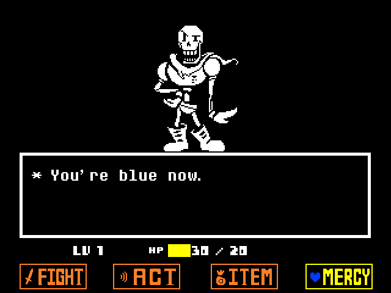
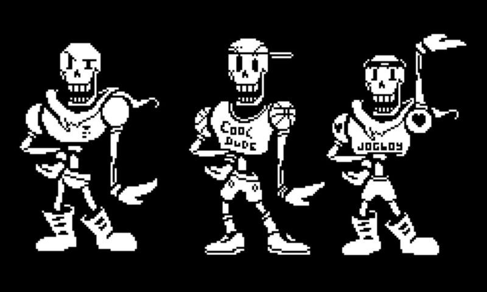

Papyrus del popular juego Undertale es simplemente hermoso solo mírenlo
Sus ataques huesudos pondrían celoso a tu inferior calcio y ten cuidado de dar un paso en falso si llegas a volverte azul
A pesar de ser un gran luchador a Papyrus no le falta estilo de la moda con más de dos atuendos para lucir (más que yo :c)
Si toda la hermosura del dios Papyrus no es suficiente para convencerte solo escuchar su tema de batalla debería volverte un seguidor de el
Undertale - Papyrus Theme Song - Bonetrousle